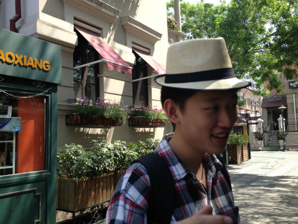

My Photo

Basic Information
Name: Hao Wang (Jack)
Gender: Male
Birth: 29 May 1992
Address: 2 Argyle Avenue, Ryde, NSW 2112
Mobile: 04 5261 0245
Email: Jack.w0529@gmail.com
Education
Master
Master, Information Technology, Major in Internetworking
University of Technology Sydney
2015.2 - 2016.11
Bachelor
Bachelor, Engineering Management
Central University of Finance and Economics – Beijing, China
2010.9 - 2014.7
Working Experience
Human Resources Internship
Beijing 797 Hua Yin Electronics Co.,Ltd.
2011.7-2011.8 (1 month)
Recruit and train new employees
Record the personnel alteration situation
Human Resources Internship
Beijing Foreign Enterprise Human Resources Service Co.,Ltd.
2014.3-2014.4 (1 month)
Filtrate resume
Recruit new employees for China Unicorn and Samsung
Basic training for new employees
Policies and regulations of internship
China Industry Software Association
2014.7-2015.1 (6 months)
Contact and collect enterprise data from software enterprises
Basic data analysis to make standard for evaluating the annual qualified software enterprise
Part-time Waiter
Wangfu Family Kitchen, Eastwood
2015.11-2016.1 (3 months)